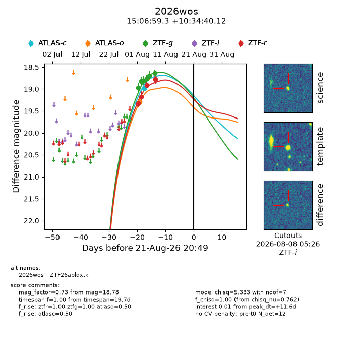
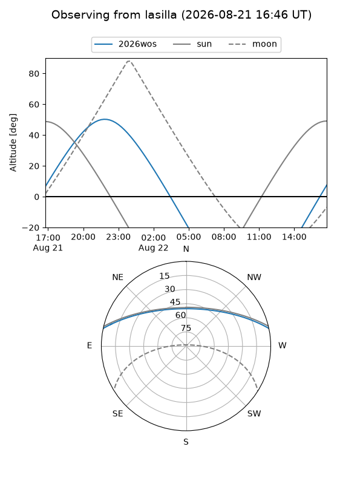
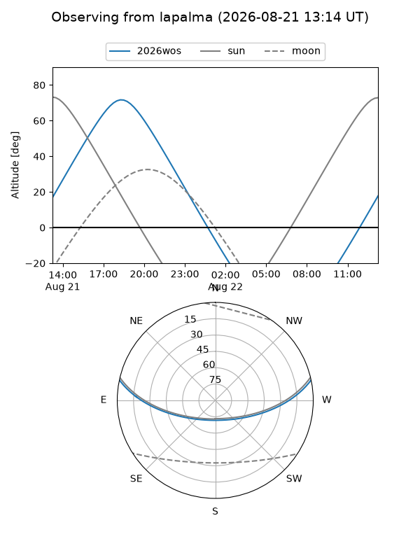
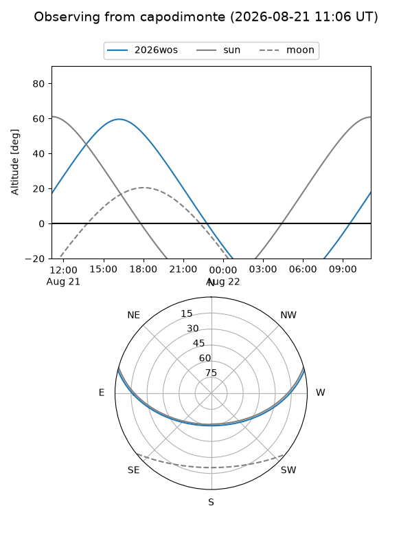
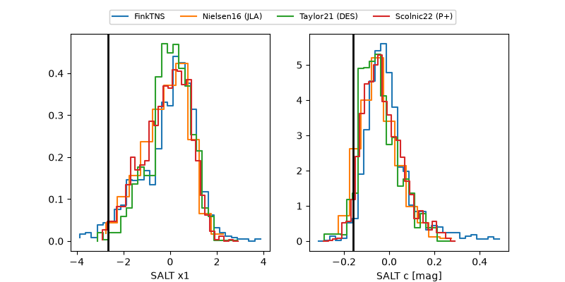

2026wos
Target 2026wos at 2026-08-22 07:17
Aliases and brokers:
FINK-ZTF: ztf.fink-portal.org/ZTF26abldxtk
Lasair-ZTF: lasair-ztf.lsst.ac.uk/objects/ZTF26abldxtk
ALeRCE-ZTF: alerce.online/object/ZTF26abldxtk
YSE-PZ: ziggy.ucolick.org/yse/transient_detail/2026wos
TNS name: wis-tns.org/object/2026wos
Direct TNS query: direct search
alt names
ZTF26abldxtk (ztf,fink_ztf)
2026wos (tns,yse)
Coordinates:
equatorial (ra, dec) = 226.7473,+10.57781
equatorial (HMS+DMS) = 15:06:59.35,+10:34:40.12
galactic (l, b) = (12.0847,+54.09174)
Flags:
TNS type: nan
peak dt: +12.0
Photometry:
last atlasc=18.98, atlaso=19.30, ztfg=18.64, ztfr=18.78
1 atlasc, 1 atlaso, 6 ztfg, 4 ztfr detections
Lightcurve

Visibility



Additional plots
